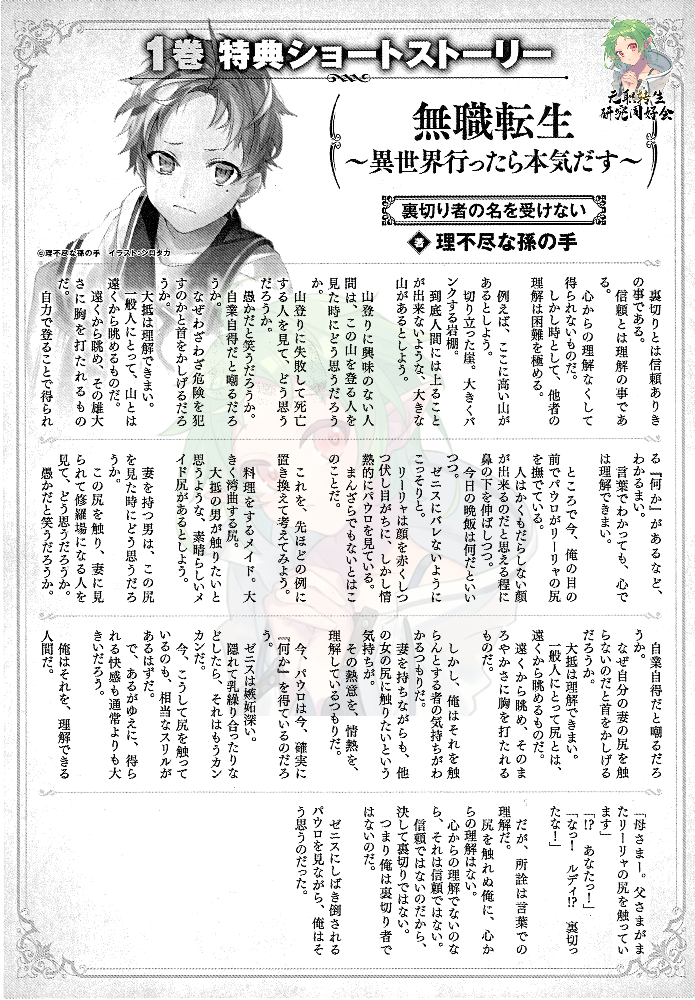

Volume 1 Bonus Short - I shall not be named a traitor

Betrayal originates from the trust. And trust has its roots in understanding. It’s something that can’t be gained unless there’s understanding from the heart. But sometimes it could be extremely difficult to make the other person understand.
For example, let’s say there’s a tall mountain here. A steeply rising cliff. A precariously leaning ledge. Let’s make it a mountain that a normal person cannot possibly climb.
How would a person who has no interest in mountain climbing think when they see someone trying to climb it? Seeing people die failing to conquer the peak, what would they think? Would they laugh saying it’s stupid? Or would they scoff at them saying they are reaping what they sowed? Or maybe they would lean their heads wondering why they are putting themselves in danger.
Most of them can’t understand. For a normal person, a mountain’s something to look at from afar. A thing to gaze at from aways, and be moved by its majesty. They are not able to understand that there’s “something” that someone gains by climbing it under their own power. Even if they understand the words, they won’t truly understand in their hearts.
Incidentally, Paul is caressing Lilia’s bottom in front of my eyes right now. With such a lewd face that makes one wonder whether a human’s face can be even so sloppy. Doing it while asking what is today’s dinner going to be, secretly so that Zenith won’t notice it. Even while blushing furiously with downcast eyes, she is passionately looking at Paul. Not as annoyed as she would have others believe is what it is.
Let’s substitute this with the previous example and think it over.
The maid who cooks. A highly curvaceous bottom. Let’s say this is a magnificent maid’s bottom that most men would want to feel.
What would a man with a wife think if he sees this? What would he think of the person who unleashed a scene of carnage by letting his wife see him touching this? Would he laugh thinking this is stupid? Or scoff saying they reaped what they sowed? Maybe they would lean their head in puzzlement at why didn’t he caress his wife’s bottom in that case.
Most of them can’t understand. For a normal person, a bottom is something you gaze at from afar. Something you look on from afar and get moved by its curvy lines.
However, I believe I am someone who can understand the feeling of a man who wants to touch it. The desire to touch other woman’s bottom even while having a wife oneself. That zeal, that passion, I think I understand them.
Now, right now, Paul’s surely gaining that “something”. Zenith is a jealous person. If there’s a secret affair going on, she would be surely up in flames. So there’s a proportionate thrill involved in secretly touching the bottom like this. And because of this, the pleasure one gains is also probably more than the usual.
I am someone who can understand it.
“Mother---! Dad is touching Lilia’s bottom!”
“!? YOU!”
“Ahh! Rudy!? You betrayed me!”
But in the end, it’s only an understanding of words. I, who never touched a bottom can’t gain understanding in the heart. If there’s no understanding in the heart, something like trust can’t exist. And because there isn’t such a thing as trust in the first place, this is certainly not a betrayal. It means I am not a traitor.
I had such thoughts while watching Zenith tear through Paul